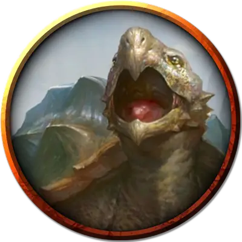

Молодая небосклонная черепаха
Young Horizonback Tortoise
Огромный Зверь, без мировоззрения

Класс Доспеха 15 (природный доспех, 22 находясь в панцире)
Хиты 68 (8к12 + 16)
Скорость 30 футов
| мод | спас | ||
|---|---|---|---|
| СИЛ | 19 | +4 | +4 |
| ЛОВ | 11 | +0 | +0 |
| ТЕЛ | 15 | +2 | +2 |
| мод | спас | ||
|---|---|---|---|
| ИНТ | 2 | −4 | −4 |
| МДР | 12 | +1 | +1 |
| ХАР | 5 | −3 | −3 |
Чувства пассивное Восприятие 11
Языки Гоблинский
Опасность 3 (700 опыта)
Бонус мастерства +2
Особенности
Языки. Понимает Гоблинский, но не говорит.
Амфибия. Черепаха может дышать и воздухом и под водой.
Действия
Укус. . Рукопашная атака оружием: +7 к попаданию, досягаемость 10 футов, одна цель. Попадание: 18 (4к6 + 4) колющего урона. Если целью является существо, оно должно преуспеть в спасброске Силы Сл 14, иначе будет сбито с ног.